AdaBoost
Can many one-question trees, built one after another, beat a single decision tree at spotting an electronic night?
Overview
Boosting builds a strong model out of many weak ones. Each weak model is only a little better than guessing. Bagging (and random forests) grows many deep trees at the same time, each on a random sample of the data, and gives them an equal vote, which averages away the noise of any one tree. Boosting does the opposite. It builds small trees one after another, and each new tree focuses on the rows the earlier ones got wrong (Figure 1). Bagging mainly reduces variance (deep trees that overreact to their sample). Boosting mainly reduces bias (simple trees that are too crude on their own).
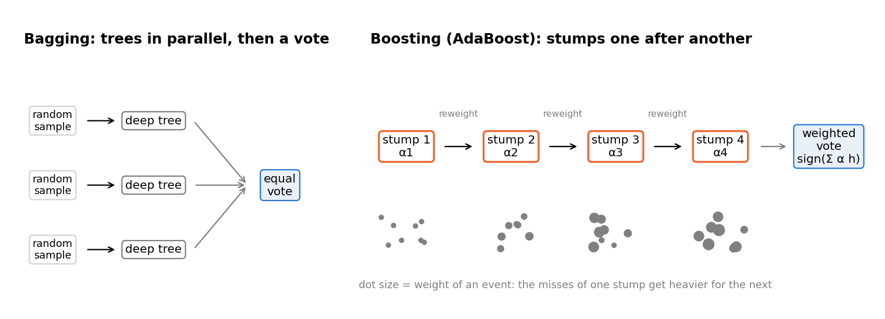
AdaBoost (adaptive boosting) usually uses decision stumps: trees with a single question and two leaves, such as “does the show start after 8 pm?”. A stump alone is a weak learner. AdaBoost keeps a weight on every training row, starting equal (1/n each), and repeats these steps for rounds m = 1, 2, …, M:
- Fit a stump hm to the weighted rows and compute its weighted error εm, the total weight of the rows it gets wrong.
- Give the stump a say, αm = ½ ln((1 − εm) / εm). A stump with a small error gets a large α. A stump at ε = 0.5 (a coin flip) gets α = 0, no say at all (Figure 3).
- Reweight the rows: multiply the weight of each missed row by eαm and each correct row by e−αm, then rescale so the weights add up to 1. After the update the missed rows carry exactly half of the total weight, so the next stump cannot ignore them.
The final model is a weighted vote. With the classes written as +1 and −1, H(x) = sign(α1h1(x) + α2h2(x) + … + αMhM(x)). Each stump votes for a class, and its vote counts α times. Figure 2 shows three rounds on made-up points. Each round’s misses grow, the next stump cuts in a new direction to get them right, and the weighted vote of three straight cuts makes a boundary with a corner that no single stump could draw. The learning rate shrinks every α, so each stump moves the model a smaller step and more rounds are needed. The number of rounds and the learning rate are the two settings to tune. (Scikit-learn uses the SAMME version, whose weight is ln((1 − ε) / ε), exactly 2α. Every vote is doubled, so no prediction changes.)
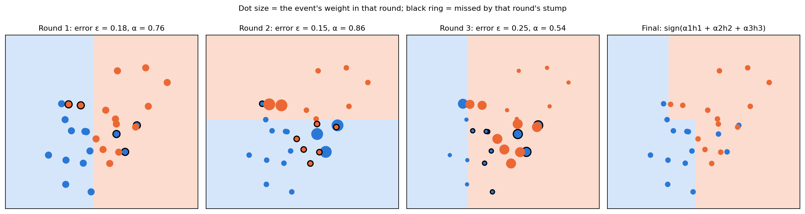
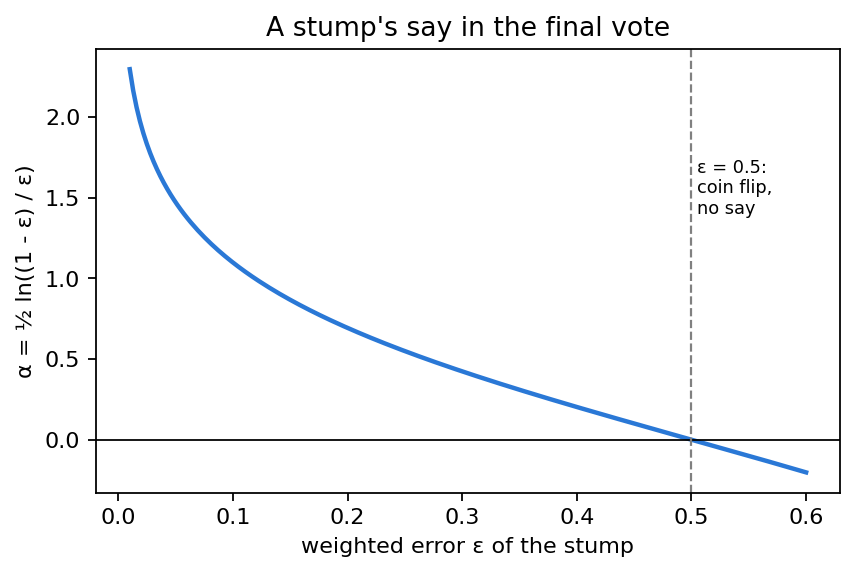
Data Prep
AdaBoost is supervised, so it needs labeled data. It uses the same label and the same 480 labeled events as the Naive Bayes and Decision Trees tabs (240 electronic, 240 not), with only the format of each event: start hour, weekday, number of artists, days between on-sale and the show (−1 = unknown) and month. No genre and no venue are used.
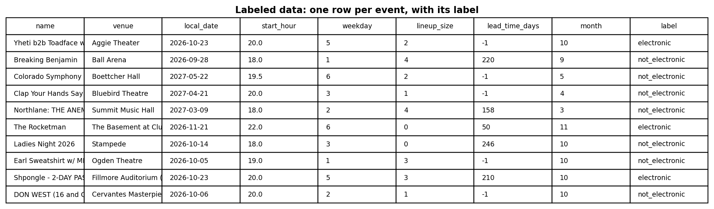
Scikit-learn’s AdaBoostClassifier only accepts numbers. Start hour,
number of artists, lead time and month already are numbers with a meaningful order. The
weekday is a category, though: it was stored as 0 = Sunday to
6 = Saturday, which would tell the model that Saturday is “six times”
Monday and that Saturday and Sunday are far apart. So it was turned into seven 0/1
columns with one-hot encoding (pd.get_dummies), one
column per day (Figures 5 and 6). That leaves 11 numeric columns.
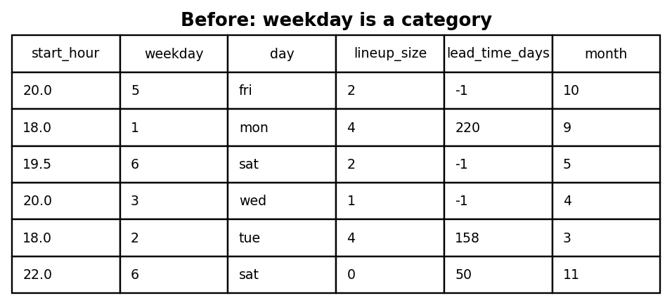
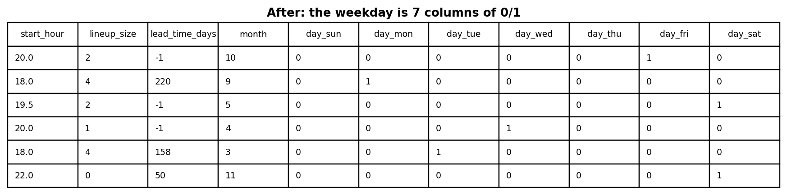
The events were split with train_test_split (70/30, stratified, same seed)
into a training set of 336 events and a testing set
of 144 events. These are exactly the same events as in the training and testing sets of
the Naive Bayes and Decision Trees tabs, so all the models are compared on the same 144
shows. The sets are disjoint. Testing on training events would reward
memorizing, and boosting memorizes easily, because it keeps adding stumps aimed at
the training rows it still gets wrong. The settings were chosen with 5-fold cross
validation inside the training set, and the testing set was used once, at
the end.
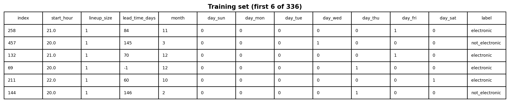
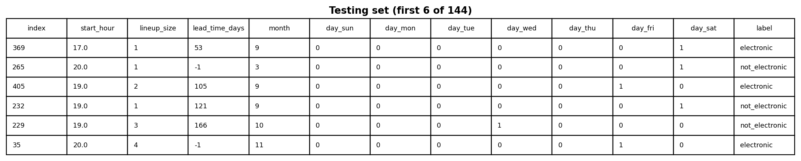
- Labeled data: exports/module3/events_labeled.csv
- Training set: exports/module4/ada_train.csv · Testing set: exports/module4/ada_test.csv
Code
- adaboost.py — one-hot encoding, the split, round 1 by hand, the cross-validated tuning, the final model and the comparison with the Module 3 trees
- concept_figures.py — Figures 1–3
onehot = pd.get_dummies(df["weekday"].map(DAYS), prefix="day").astype(int)
X = pd.concat([df[["start_hour", "lineup_size", "lead_time_days", "month"]], onehot], axis=1)
X_train, X_test, y_train, y_test = train_test_split(X, y, test_size=0.3,
random_state=42, stratify=y)
#tuning: validation accuracy after every round, 5 folds, 5 learning rates
for lr in [0.05, 0.1, 0.25, 0.5, 1.0]:
for tr, va in StratifiedKFold(5, shuffle=True, random_state=42).split(X_train, y_train):
m = AdaBoostClassifier(estimator=DecisionTreeClassifier(max_depth=1),
n_estimators=400, learning_rate=lr).fit(X_train.iloc[tr], y_train.iloc[tr])
scores.append(list(m.staged_score(X_train.iloc[va], y_train.iloc[va])))
ada = AdaBoostClassifier(estimator=DecisionTreeClassifier(max_depth=1),
n_estimators=99, learning_rate=1.0, random_state=42).fit(X_train, y_train)
accuracy_score(y_test, ada.predict(X_test))Results
The starting point: one stump, and round 1 by hand
A single stump asks the same question as the root of every Module 3 tree,
start_hour ≤ 20.01 (does the show start after 8 pm?). On its own it gets
0.688 of the test events right. Round 1 of AdaBoost was also computed
by hand on the 336 training events. The first stump misses 88 of them, so its weighted
error is ε1 = 88/336 = 0.262 and its say is
α1 = ½ ln(0.738 / 0.262) = 0.518. Each missed
event’s weight goes from 1/336 = 0.00298 to 0.00568, and each correct one drops
to 0.00202. The 88 misses now carry exactly half (0.500) of the total
weight, as the update promises, and these numbers match scikit-learn’s.
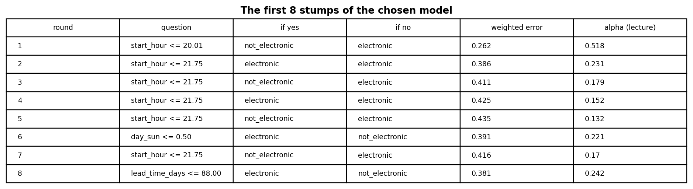
Figure 9 shows the reweighting at work. Most of the 88 misses from round 1 were electronic shows starting by 8 pm, so after the update electronic events carry most of the weight, and the best second stump simply predicts “electronic” on both sides (error 0.386). The next rounds keep cutting at 9:45 pm, Sunday and an on-sale window of 88 days, each with a smaller α, because each new stump has a harder, reweighted problem to solve.
Tuning the number of rounds and the learning rate
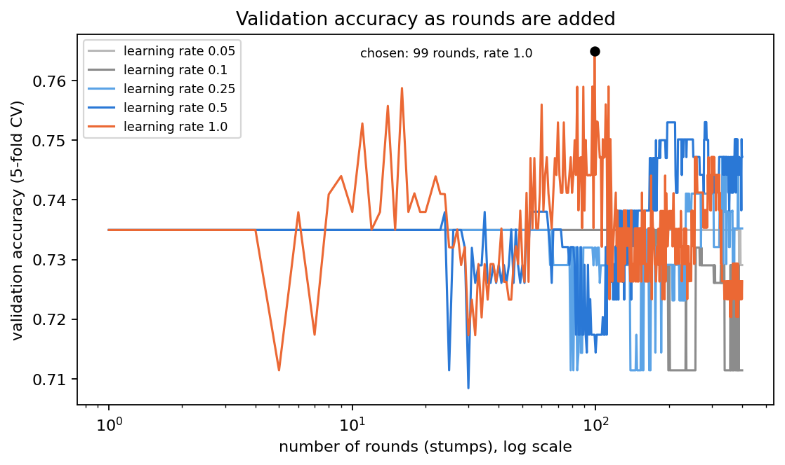
| Learning rate | Best validation accuracy | At round | After 400 rounds |
|---|---|---|---|
| 0.05 | 0.735 | 1 | 0.729 |
| 0.1 | 0.735 | 1 | 0.711 |
| 0.25 | 0.747 | 332 | 0.735 |
| 0.5 | 0.753 | 281 | 0.747 |
| 1.0 | 0.765 | 99 | 0.726 |
Every curve starts at 0.735, the accuracy of the first stump. With small learning rates (0.05 and 0.1) the later stumps are scaled down so much that 400 rounds never beat that one stump. Larger rates move faster: rate 0.5 climbs to 0.753 after about 280 rounds, and rate 1.0 reaches the highest value, 0.765 at 99 rounds, so that setting was chosen. Past that point the curve for rate 1.0 slowly falls (0.726 after 400 rounds): the extra stumps chase training events that are hard for a reason, such as early-evening electronic concerts, and start fitting noise. The curves are jagged because one validation event is about 1.5 points of accuracy in a fold of 67, so the exact peak is partly luck. Any setting from about 60 to 120 rounds at rate 1.0 is a fair choice.
The final model on the testing set
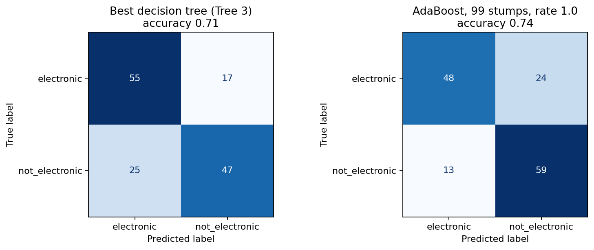
AdaBoost with 99 stumps at learning rate 1.0 classified 107 of the 144 test events correctly, an accuracy of 0.743 (ROC AUC 0.829). It found 48 of the 72 electronic events and 59 of the 72 others. Its training accuracy is 0.780, close to the test accuracy, so 99 stumps do not overfit much. With all 400 rounds training accuracy rises to 0.801 while test accuracy drops to 0.729, the same pattern as the validation curve. More than half of the stumps (52 of 99) ask about the start time, and 25 ask about the on-sale window (Figure 12).
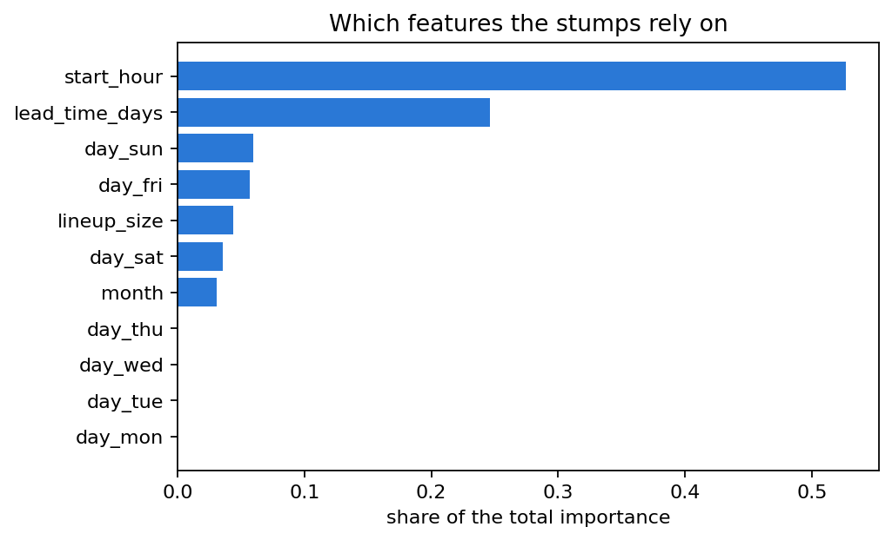
AdaBoost vs the decision trees from Part 3
| Model (same 144 test events) | Accuracy | Correct |
|---|---|---|
| Single stump | 0.688 | 99 |
| Tree 1: Gini, depth 3 | 0.681 | 98 |
| Tree 2: Entropy, depth 3 | 0.688 | 99 |
| Tree 3: Gini, depth 5 (best tree) | 0.708 | 102 |
| AdaBoost, 99 stumps | 0.743 | 107 |
AdaBoost did best. It beats the best decision tree by 3.5 percentage points (5 more events right), the other two trees by 5.6 and 6.3 points, and the single stump it is built from by 5.6 points (8 events). The errors are also different (Figure 11). Tree 3 catches more electronic events (55 against 48), but it pays for that with almost twice as many false alarms (25 against 13). AdaBoost is the more cautious model. It is also the best of all the models so far at ranking events (AUC 0.829, against 0.767–0.806 for the three trees, 0.820 for logistic regression and 0.803 for Naive Bayes). Logistic regression still has the highest accuracy (0.771). On 144 test events one event is 0.7 points, so a gap of 5 events is a modest improvement: on a different set of 144 shows the order of the closest models could change.
Conclusions
Combining many small questions about a listing works better than asking one long chain of them. A single tree tops out around 70% at telling electronic nights from other music, and 99 weighted stumps reach 74% on the same shows, with half as many false alarms. AdaBoost also confirms which facts matter. It came back to the start time again and again and then to how far ahead tickets go on sale, while the weekday, lineup and month mattered much less. For finding shows, a late start is the strongest sign of an electronic night in Colorado, and a short on-sale window is the second. The two together are a better guide than the genre field, which is missing or wrong for more than a quarter of listings. The limit is also clear. About one electronic show in three looks like any other concert (an early start, sold months ahead at a big venue), and questions about the format alone cannot separate those. Catching them will need information about the artists themselves, which is the next step for the recommender.